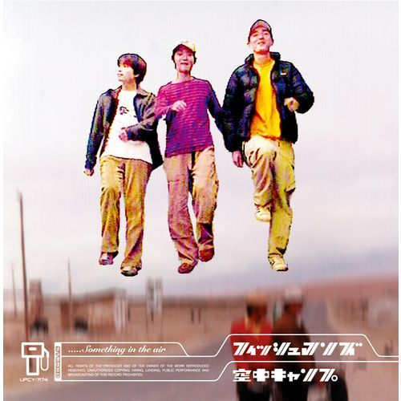

夕暮れの君の影を追いかけながら 追いかけながら
今もこのままで 止まっちまいたい そんな僕さ
今日が終わっても 明日がきて 長くはかなく 日々は続くさ
意味なんかない 意味なんかない 今にも僕は泣きそうだよ
このまま連れてってよ 僕だけを連れてってよ遠くへ連れてってよ
君とだけ二人落ちていく BABY, IT'S BLUE
友達もいなくなって BABY, IT'S BLUE
誰よりも 大好きだった BABY, IT'S BLUE
Fishmansの「BABY BLUE」は、1996年に発表されたアルバム 『空中キャンプ』に収録されている曲です。
この曲は、淡く浮遊するような音と、ゆったりしたリズムが印象的な曲です。 聴いていると、現実から少しだけ離れて、どこか遠くへ流されていくような感覚があります。
どこかへ行きたい気持ちと、日々が続いていく現実のあいだにある、淡い時間を一人夕暮れの中で鳴らしているように感じます。
『空中キャンプ』は、Fishmansが1996年に発表した5枚目のアルバムです。レゲエやダブを土台にしながら、ドリームポップやサイケデリックな要素を取り入れた、独特の浮遊感を持つ作品です。
収録曲には「BABY BLUE」や「ナイトクルージング」などがあり、日常の風景が少しだけ夢のように見えるような音作りが特徴です。明るさと寂しさ、生活感と非現実感が同時に存在しているところが、このアルバムの大きな魅力だと思います。

クラスメイトたちの音楽ページへ